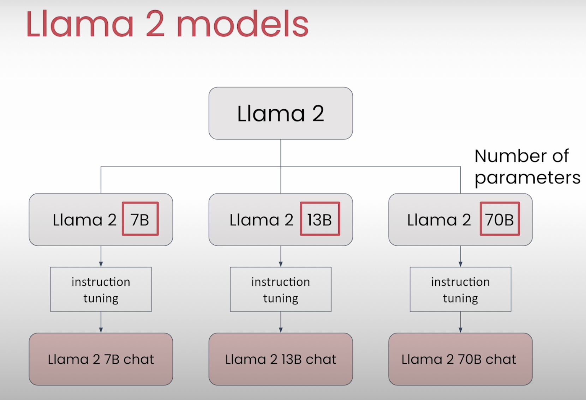

Prompting Engineering
Dayuan Tan, 05/13/2024
Prompting Engineering
- Prompting Engineering
- 0 TL;DR - Too Long; Don't Read.
- 1 Andrew Ng & Isa Fulford - ChatGPT Prompt Engineering for Developers
- 2 Andrew Ng & Amit Sangani - Prompt Engineering with Llama 2&3
- 3 Microsoft
- 4 Google
- 5 Other
0 TL;DR - Too Long; Don't Read.
Take away: COSTAR framework and principles.
COSTAR Framework
- C - Context
- Providing background information helps the LLM understand the specific scenario.
- Multi shots prompting (multiple examples)
- O - Objective
- Clearly defining the task directs the LLM’s focus.
- Use CoT (Chain of Thoughts)
- "Let's think step by step."
- S - Style
- Specifying the desired writing style aligns the LLM response.
- T - Tone
- Set the attitude and tone of the response. Indicates the emotional character or attitude of the response, shaping how the message is emotionally conveyed.
- A - Audience
- Identify who the response is for. Defines the intended audience or reader of the content, influencing the language, complexity, and approach of the response.
- R - Response
- Provide the response format and style, how the response should be structured.
Principles
- Multiple Shots Prompting
- Chain of Thoughts (CoT)
- "Let's think step by step."
- "Think step by step. Explain each intermediate step. Only when you are done with all your steps, provide the answer based on your intermediate steps."
- Iterate
Reference:
- Best Prompt Techniques for Best LLM Responses (COSTAR)
- Mastering Prompt Engineering: A Guide to the CO-STAR and TIDD-EC Frameworks
1 Andrew Ng & Isa Fulford - ChatGPT Prompt Engineering for Developers
https://learn.deeplearning.ai/courses/chatgpt-prompt-eng/lesson/1/introduction
1.1 Principle 1: Write clear and specific instructions
- Tactic 1: Use delimiters to clearly indicate distinct parts of the input
- Delimiters can be anything like: ```, """, < >,
- Delimiters can be anything like: ```, """, < >,
- Tactic 2: Ask for a structured output
- JSON, HTML
- Tactic 3: Ask the model to check whether conditions are satisfied
- Tactic 4: "Few-shot" prompting
1.2 Principle 2: Give the model time to “think”
- Tactic 1: Specify the steps required to complete a task
- Ask for output in a specified format
- Tactic 2: Instruct the model to work out its own solution before rushing to a conclusion
Notes
1.3 Iterative prompt development
Notes
1.4 Capabilites
- Summarizing
- Summarize with a word/sentence/character limit
- Summarize with a focus on xxx
- Try "extract" instead of "summarize"
- Notes 4-summarizing.html
- Notes 4-summarizing.ipynb
- Inferring
- Notes 5-inferring.html
- Notes 5-inferring.ipynb
- Transforming
- Notes 6-transforming.html
- Notes 6-transforming.ipynb
- Expanding
- Notes 7-expanding.html
- Notes 7-expanding.ipynb
1.5 Chatbot
Notes
2 Andrew Ng & Amit Sangani - Prompt Engineering with Llama 2&3
https://learn.deeplearning.ai/courses/prompt-engineering-with-llama-2/lesson/1/introduction
2.1 Overview Llama Models


2.2 Basic
2.3 Multi-turn Conversations


from utils import llama
from utils import llama_chat
2.4 Prompt Engineering Techniques
- In-Context Learning
- Zero-shot Prompting
- Few-shot Prompting
- Specifying the Output Format
- Role Prompting
- Chain-of-thought Prompting
- "Think step by step. Explain each intermediate step. Only when you are done with all your steps, provide the answer based on your intermediate steps."
- 4_prompt_engineering_techniques.html
- 4_prompt_engineering_techniques.ipynb
- 5_comparing_llama_models.html
- 5_comparing_llama_models.ipynb
- 6_code_llama.html
- 6_code_llama.ipynb
2.5 Llama guard


- 7_llama_guard.html
- 7_llama_guard.ipynb
- 8_walkthrough_helper_function.html
- 8_walkthrough_helper_function.ipynb
3 Microsoft
Principles:
- clear instructions
- Consider delineating key components of the prompt or desired completion format
- Context
- Zero-shot learning (ZSL) and then few-shot learning (FSL)
- Try rearranging your prompt
- Optimize few-shot selection
- Instruct the model how to reason
- Handle ambiguous context
4 Google
https://developers.google.com/machine-learning/resources/prompt-eng
Prompting Best Practices
- Clearly communicate what content or information is most important.
- Structure the prompt:
- role,
- give context/input data,
- then provide the instruction.
- Multi shots
- Use specific, varied examples to help the model narrow its focus and generate more accurate results.
- Use constraints to limit the scope of the model's output.
- CoT Chain-of-thought
- Break down complex tasks into a sequence of simpler prompts.
- Instruct the model to evaluate or check its own responses before producing them.
5 Other
Nvidia
- Zero-shot prompts
- Few-shot prompts
- Chain-of-thought prompts
- https://developer.nvidia.com/blog/an-introduction-to-large-language-models-prompt-engineering-and-p-tuning/
Explained Methodologies and frameworks in Prompt Engineering
Oracle